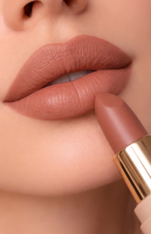
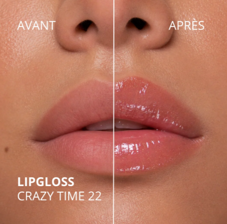
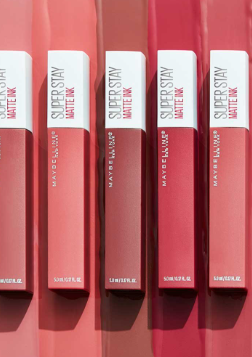

Labiales
Los labiales son uno de los productos más populares del maquillaje. Podemos encontrar tonos nude, rosas, rojos y muchos más para combinar con cualquier estilo.
Colores y tendencias para tus labios

Los labiales son uno de los productos más populares del maquillaje. Podemos encontrar tonos nude, rosas, rojos y muchos más para combinar con cualquier estilo.

El gloss aporta brillo a los labios y puede utilizarse solo o encima de un labial para conseguir un acabado luminoso, natural y atractivo.

El delineador ayuda a definir la forma de los labios, resaltar su contorno y conseguir un maquillaje más preciso y bonito.